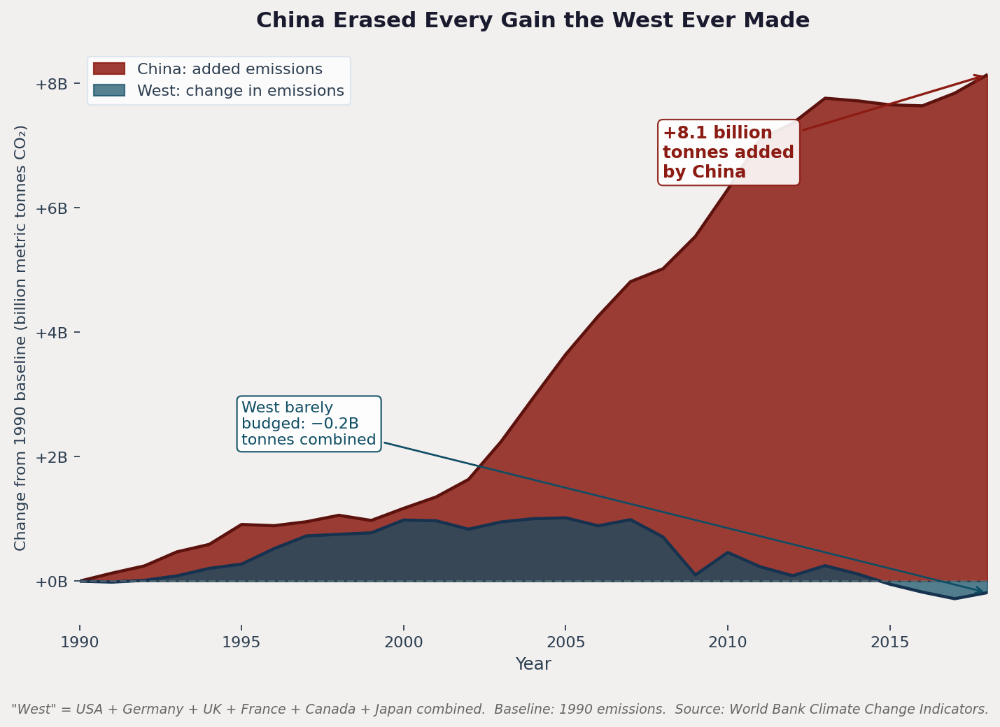

China Erased Every Gain the West Ever Made
The change in annual CO2 emissions from a 1990 baseline. China’s curve adds 8.1 billion tonnes; the combined West (US, Germany, UK, France, Canada, Japan) is essentially flat — barely −0.2 billion tonnes after thirty years.
-
−1.5 1990 baseline conveniently chosen
Anchoring the y-axis at 1990 starts the clock just before China’s reform-era acceleration, maximizing visible divergence. Picking 1980, 2005, or a rolling baseline would produce a softer curve. We considered showing multiple baselines but chose the most dramatic.
-
−1.5 Six countries collapsed into “the West”
Aggregating six economies into one line averages out high performers (UK, Germany) with laggards (Canada). Shown individually, several Western countries did meaningfully reduce. The aggregate flattens that variance and makes the West look uniformly stagnant against a single rising China.
-
−2 Absolute emissions, no per-capita normalization
We show raw tonnes — a population term hidden in plain sight. China has roughly 4× the population of the US, so its absolute total is huge by construction. Reframing on per-capita would entirely flip the visual hierarchy. We picked the framing that makes scale read as guilt.
-
−1 Saturated reds and dark page palette
Crimson connotes alarm, blood, danger; the dark background tightens the emotional register. The data could be plotted in any color, but red on near-black primes the reader to feel a problem before reading the axis.
-
+1 Source line and complete units stay visible
Despite the slanted framing, the y-axis is correctly scaled, includes units (billion metric tonnes), and the source citation appears under the chart. A skeptical reader who looks past the headline can still recover the raw data.